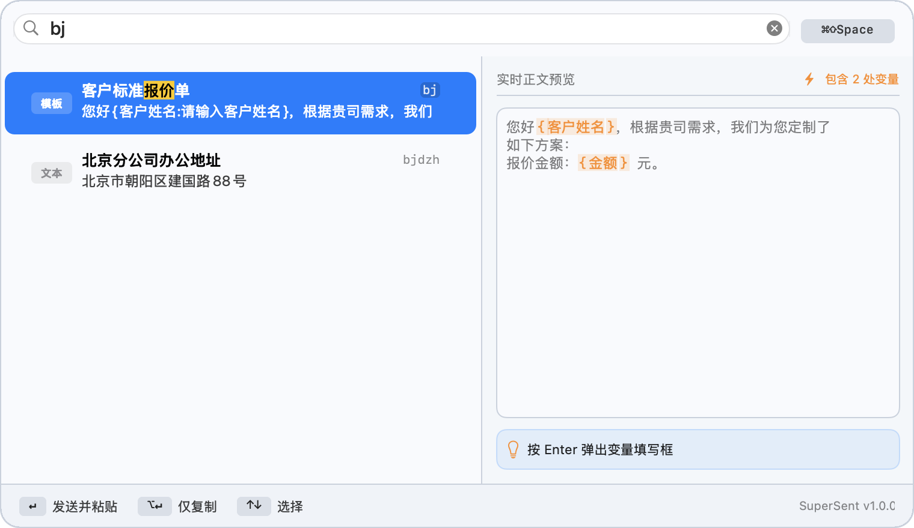

02 / 全局搜索
一个快捷键，直接抵达要发送的内容。
搜索标题、正文、标签、别名与拼音首字母。结果随输入即时更新，右侧同步展示完整内容，减少发送前的不确定。
- ↑↓切换搜索结果
- Enter复制并粘贴
- ⌥ Enter仅复制到剪贴板
macOS 菜单栏内容工具
把重复发送的文本、图片、视频、文件和模板留在本机。按下 ⌘⇧Space，立即搜索、预览并粘贴到当前应用。


Apple Developer ID 已签名
Apple 公证已通过
数据保存在本机
01 / 更少重复
SuperSent 把常用内容变成一个随时可搜索的本地资料库。无需切换窗口翻找历史消息，也不必把临时文本散落在多个文档里。
核心工作流
02 / 全局搜索
搜索标题、正文、标签、别名与拼音首字母。结果随输入即时更新，右侧同步展示完整内容，减少发送前的不确定。
03 / 内容管理
文本、图片、视频、普通文件与变量模板共用一套管理方式。导入资源会按图片、视频、文档、压缩包、音频等类型整理，查找和维护都更清楚。
删除条目时，只会清理受管目录内且不再被其他条目引用的资源，外部文件与共享资源保持不变。
04 / 文件工作流
添加图片、视频或普通文件时，可以在保存前重命名。扩展名始终保留；如果名称冲突，会直接提示且不会覆盖已有文件。
视频在主窗口与搜索面板中均可直接播放，并在预览离开后自动暂停。

05 / 变量模板
用 {变量名:提示文字} 定义动态字段。选择模板后，SuperSent 会依次收集变量并生成最终内容。
您好客户姓名，根据贵司需求，我们为您定制了如下方案：
报价金额：金额 元。
开始使用
打开 DMG，将 SuperSent 拖到 Applications；首次启动会直接显示内容管理主窗口。
从菜单栏打开管理窗口，添加分类、标签与需要反复使用的内容。
在目标应用中按 ⌘⇧Space，搜索后按 Enter 完成发送。
隐私与权限
SuperSent 1.0.2 无需账户，不提供云同步，也不使用分析或追踪服务。数据库与导入资源保存在本机 Application Support 目录。
全局搜索快捷键不需要辅助功能权限。只有向其他应用自动发送 ⌘V 时需要授权；未授权时，内容仍会复制到剪贴板。
阅读完整隐私说明